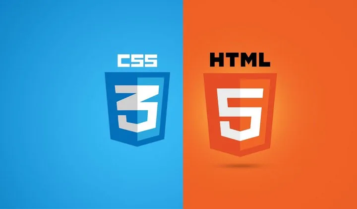
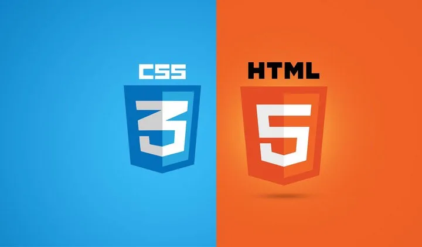

Featured Post
ChatGPT: Explore how ChatGPT can enhance productivity, creativity, and communication through AI-powered conversations and insights....
Read MorePERSONAL BLOG


 



JULY 30, 2024
#chatgpt #ml #openai #july
ChatGPT is transforming the way we interact with technology, offering an AI-driven conversational experience that’s both intuitive and powerful. Whether you're looking to boost productivity, enhance customer service, or simply explore the creative possibilities of AI, ChatGPT provides a versatile platform for a wide range of applications. In this blog, we’ll dive into the workings of ChatGPT, explore its potential uses across different industries, and offer tips on how to make the most out of this cutting-edge tool.As AI continues to advance, ChatGPT stands out as a remarkable example of how language models can simulate human-like conversation. It’s not just a tool for generating text; it's a dynamic assistant that can help with everything from brainstorming ideas and drafting content to answering questions and providing recommendations. This blog will explore the underlying technology of ChatGPT, discuss ethical considerations, and offer practical advice for integrating it into your workflow, ensuring you can leverage its capabilities effectively and responsibly. Read More
JUNE 30, 2024
#develpoment #js #expressjs #june
Express.js is a minimalist and flexible Node.js web application framework that has become a cornerstone for building fast and scalable web applications. Known for its simplicity and unopinionated approach, Express.js allows developers to create robust APIs and server-side applications with ease. This blog will take you through the essentials of Express.js, from setting up a basic server to handling routing and middleware, empowering you to build efficient and maintainable web applications. Beyond the basics, Express.js offers a rich ecosystem of plugins and tools that can extend its functionality, making it suitable for both small projects and large-scale applications. In this blog, we’ll explore advanced features like error handling, authentication, and performance optimization, providing you with the knowledge to take full advantage of Express.js in your development projects. Whether you’re new to Node.js or an experienced developer, this guide will help you unlock the full potential of Express.js. Read More
AUGUST 30, 2024
#react #mern #webdevelopment #august
React has revolutionized front-end development with its component-based architecture, enabling developers to build interactive and efficient user interfaces with ease. As a powerful JavaScript library maintained by Facebook, React simplifies the process of creating reusable UI components, making it easier to manage complex applications. This blog will guide you through the core concepts of React, from setting up your first project to understanding JSX, state, and props, giving you the foundation to build responsive and modern web applications. React's ecosystem is vast, with tools like React Router for navigation and Redux for state management, allowing you to create scalable applications with a clean and organized codebase. In this blog, we’ll delve into these advanced topics, exploring how to integrate these tools seamlessly into your React projects. Whether you’re a beginner or looking to enhance your skills, this guide will equip you with the knowledge and best practices needed to harness the full power of React in your development journey. Read More
MARCH 30, 2024
#html5 #css3 #blueprint #march
HTML5 and CSS3 have set the standard for creating modern, responsive, and visually appealing web pages. HTML5 introduces new elements and attributes that enhance the structure and accessibility of web content, while CSS3 brings powerful styling capabilities, including animations, transitions, and flexible layouts. In this blog, we'll explore the fundamental principles of HTML5 and CSS3, guiding you through the process of building a well-structured and aesthetically pleasing web page from scratch. Beyond the basics, HTML5 and CSS3 offer advanced features that allow developers to create interactive and dynamic user experiences. This blog will dive into topics such as media queries for responsive design, CSS Grid and Flexbox for flexible layouts, and the use of HTML5 APIs for enhanced functionality. Whether you’re new to web development or looking to refine your skills, this guide will provide you with the tools and knowledge to create cutting-edge websites that stand out in today’s digital landscape. Read More
JANUARY 30, 2024
#js #script #structure #january
JavaScript is the backbone of modern web development, enabling dynamic and interactive features that enhance user experiences across the web. As a versatile programming language, JavaScript allows developers to manipulate the Document Object Model (DOM), handle events, and communicate with servers, making it an essential skill for creating engaging and functional websites. This blog will introduce you to the fundamentals of JavaScript, covering key concepts such as variables, functions, and object-oriented programming, to help you build a solid foundation in this powerful language. As you advance, JavaScript offers a range of features and tools to take your development skills to the next level. From asynchronous programming with promises and async/await to leveraging frameworks and libraries like React and Node.js, this blog will explore how to harness these capabilities to develop sophisticated and high-performance web applications. Whether you’re just starting out or looking to deepen your expertise, this guide will provide valuable insights and best practices to help you become a proficient JavaScript developer. Read More
OCTOBER 30, 2023
#mongodb #database #stack #october
MongoDB has emerged as a leading NoSQL database, offering a flexible and scalable solution for managing diverse data types. Unlike traditional relational databases, MongoDB uses a document-oriented model that allows for the storage of data in JSON-like formats, making it ideal for handling complex and unstructured data. This blog will introduce you to the fundamentals of MongoDB, including setting up your database, creating collections, and performing CRUD (Create, Read, Update, Delete) operations, providing you with a strong foundation to start leveraging this powerful database technology. As you dive deeper into MongoDB, you'll discover advanced features that can enhance your data management and performance. We’ll explore topics such as indexing, aggregation, and replication, which are crucial for optimizing queries and ensuring data availability. Whether you’re new to NoSQL databases or seeking to expand your expertise, this guide will equip you with the knowledge and skills needed to effectively utilize MongoDB in your projects and drive your data-driven applications to new heights. Read More
ChatGPT: Explore how ChatGPT can enhance productivity, creativity, and communication through AI-powered conversations and insights....
Read MoreMongoDB is revolutionizing the way we handle data with its flexible, scalable NoSQL architecture....
React has become the go-to library for building dynamic, responsive user interfaces in modern we....